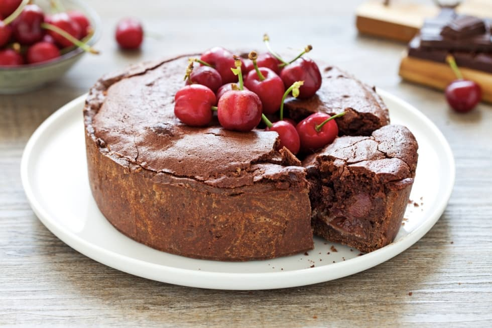

Chocolate and cherry tart

The chocolate and cherry tart is an
irresistible
cake with a soft and inviting heart: a
cocoa shortcrust pastry
that contains a
filling of fruit and dark cream.
It is the perfect dessert to end a romantic dinner for two in a summer version.
Ingredients
- For the short pastry
- 250 g of 00 flour
- 30 g of cocoa powder
- 80 g of powdered sugar
- 120 g of cold butter
- 1 egg
- 1 yolk
- 1 pinch of salt
- For the filling
- 2 tablespoons of almond flour
- 200 g of dark chocolate
- 40 g of butter
- 2 eggs
- 50 g of powdered sugar
- 300 g of cherries
- cinnamon powder
Steps
- For the pastry
- In the bowl of the planetary mixer, sand the diced butter with the flour at low speed using the whisk k.
Add the egg, yolk, cocoa, sugar and salt. Knead the dough until you get a homogeneous dough, give it the shape of a loaf with your hands,
wrap it in cling film and let it cool in the refrigerator for 1 hour. If you do not have a planetary mixer available,
the same operation can be carried out by hand, taking care not to work the pasta too long so as not to overheat it.
After the rest time in the refrigerator, roll out the dough on a freshly floured pastry board into a 5 mm thick sheet.
- Roll out the dough inside a 20 cm diameter non-stick hinged mold with high edges, covering both the base and the edges.
Prick the base with the tines of a fork and sprinkle it with almond flour. Place in the refrigerator while you prepare the filling.
- For the filling
- Melt the coarsely chopped chocolate with the butter in the microwave (or in a double boiler). When you have obtained a homogeneous mixture, let it cool down.
- In a bowl, beat the yolks together with the sugar and cinnamon with a whisk. When you have obtained a homogeneous mixture,
add the melted chocolate with the butter and mix.
- Whip the egg whites separately and incorporate them several times from bottom to top with a spatula so as not to disassemble.
Pitted the cherries, cut them in half and spread them over the almond flour.
- Pour the chocolate mixture over the cherries, level and bake in the preheated oven at 180 degrees for 45-50 minutes.
Remove from the oven and allow to cool completely before removing the ring from the pan and serving.
All credits go to Il Cucchiaio d'Argento
Back to the Romantic Dinner Menu